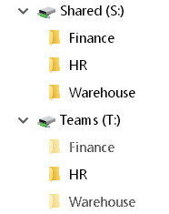

Some thoughts on how to arrange shared files. Here we discuss the what rather than the how - there is a separate page covering the technical aspects of folder sharing.
A key consideration in organising shared files is making sure that all the people in a team are aware exactly which data of theirs is being shared with other teams.
Particularly in larger teams, the people asking for data to be shared may not be aware that the area includes sensitive data.
Such problems can occur long after the sharing is initially setup, but it is not practical to do a review of access permissions every time a new data file is saved.
Take an example of an HR Team and a Finance team, it might seem reasonable to share the HR folder with Finance staff so they can get figures on annual workforce costs, but if one of the many HR subfolders has information about redundancies that may eventually affect the Finance team then they certainly don’t want that to be shared.
When a list of folders is shared, you have a choice of hiding all folders for which the user does not have permission. This was once a Novell Netware feature, but all recent versions of Windows now have Access-based Enumeration turned ON by default. This has the advantage of simplifying day-to-day working, but has the disadvantage that by hiding the folders of other teams, no one has any information on what might be available.
This can cause some ridiculous situations - a new hire needs to collate information about X, a shared folder full of data about X already exists, but not knowing anything about that they start generating all the same documents again from scratch.
If the list of fileserver shares is hidden from Windows Explorer, then something equivalent should be made available elsewhere, perhaps on the company intranet.
One approach to sharing files is to have a file server area that is open and read/write to everyone. This is a common approach in small organisations with little need for security.
With no clear ownership, file shares like this tend to become disorganised fairly quickly. Tidying this up typically involves some kind of cleardown or reorg but this is never a popular approach and is likely to result in data loss at some point.
This is very common in larger organisations, shared areas where the access is limited to only members of one team or another. This access control means that when any need arises to share documents with people not in that team they have to use email or some other means of sharing.
One approach to address these issues is to setup TWO sets of shared folders, and corresponding mapped drives. For each Team there is one shared folder that’s only available within the team and a second that is shared with other teams.
S: Shared – users will typically have access to multiple folders, here, including their own teams shared folder.
All folders are visible.T: Team only – each user will have access to one and only one folder in this share corresponding to their own Team. Other folders are hidden from view.

With this arrangement, users can save the files they want to share with other teams into their shared folder.
Because the Team Only and Shared areas are delivered to the end users via two separate drive mappings, any movement of files between them (whether Moved or Copied) will retain the desired permissions inherited from the parent folder.
You may be tempted to Map drive T: directly to each users Team folder, allowing work to be saved in T:\file.doc rather than T:\teamName\file.doc but there are good reasons for keeping the name of the team folder visible:
- If they try to email a link to a T: file or folder, to someone in a different team, they will quickly see that the other team doesnt have access to that folder, so they will realise and use the S: shared folder instead.
In contrast, they are quite likely to be completely baffled as to whya link to T:\file.doc doesn't appear for the other person, it's not intuitive.
- It acts as a reminder of their teams Folder Name.
- Login scripts are easy to setup, everyone gets exactly the same two drive mappings.
- In Windows explorer and many other places, they can switch between their Team and Shared folders, by just changing T: to S:
Some teams may store their work almost exclusively in the shared area, other teams may mostly work using their Team-only folder. It places decisions about document sharing with individual users and means that shared access is both visible and can be done on a per-file basis without having to involve the IT department at all.
For ease of use, the team folder names should be kept short - think 16 characters or less, that leaves ~ 240 characters for all the filenames within the group folder.
Granting read-only access to everyone across all shared folders makes it simple and clear that shared items are visible to everyone, but the ownership is still held by one team.
Alternatively you may want to allow multiple teams to work collaboratively with read/write access to the same shared folder. The same logic would apply - shared items are read/write to selected other teams, but the ownership is still held by one team.
It is likely to be worth setting up two AD groups for each team, one for the team members T: drive and one that grants permissions to the S: drive for other people/teams. That gives complete flexibility about who can access the Shared folder.
One flaw in this arrangement is that while it works well for people in two teams sharing data, the structure may not work so well for large project folders shared by many teams or sharing between a mish mash of people dotted around the organisation.
For those cases - create a new shared folder for the project, just like an actual team using the T: and S: structure.
If you setup every file share the same consistent way, it simplifies management, some T: drives might never be seen or used, but having them ensures you are covered for that case where a new hire is allocated to work on the mega project and nothing else.
In addition to the above, every user typically has a home folder.
If a large proportion of users need to work with files that are kept private, set the Home directory to H: so it appears at the top of the list. Conversely, mapping the Home directory to U: will put it at the bottom of the list.
For software packages like Microsoft Office, consider where the default save folder should be set to.
In some organisations the home folder may get very little use and so not require a drive mapping at all.
The arrangement described above may not work for every organisation, but hopefully it will give you ideas to improve and simplify the management of your shared files. It will not eliminate the need for custom share permissions but may help to reduce the number and complexity of changes that need to be managed.
In secure environments there is a tendency to say – "we can’t share document X with any other teams, therefore we can’t share any files. The fallback option then becomes email, which is actually far more difficult to monitor and control.
Even in the most complex environments, with many permissions to consider there is often an advantage to be found in providing a file storage area that everyone understands will never be accidentally shared with any other teams.
“The sky is filled with stars, invisible by day” ~ Henry Wadsworth Longfellow
See also
Groups - Full description of AD Local Domain groups, Global and Universal groups.
Built-in Groups - Built-In Users and Security Groups.
NoDrives - Hide mapped drives from Windows Explorer
MapDrive - Map a Drive letter to a network file share, non-persistent (VBScript)